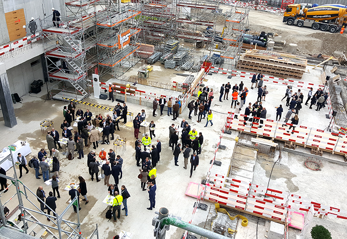

Official event, the 24.03.2017: Laying of the foundation stone.
NYX architectes GmbH is commissioned from the architecture office Richter - Dahl Rocha & Associés architectes SA in Lausanne to collaborate on the construction drawings of a part of the project “The Circle” at the Zürich airport.
NYX architectes works at the execution of the H15, a 10 floors building including shops, offices, bars, restaurants and a **** Superior hotel (Hyatt Regency) of 256 hotel rooms.